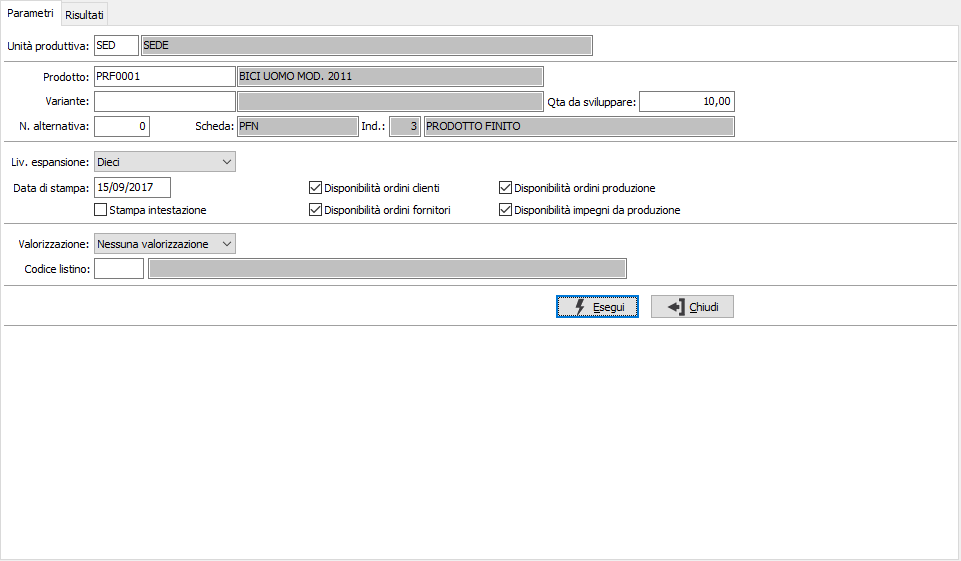
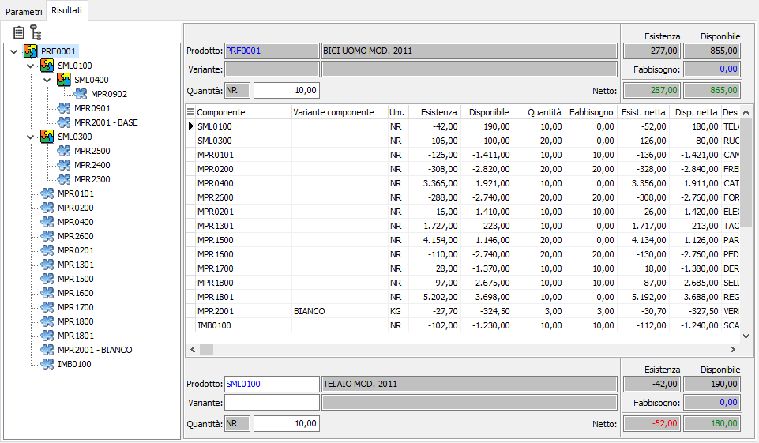

Simulazione fabbisogni
La procedura consente di visualizzare e stampare la situazione relativa alle necessità produttive di singoli prodotti; è richiesta obbligatoriamente l'unità produttiva della quale saranno utilizzati i magazzini preferenziali di prodotti finiti, semilavorati e materie prime per il calcolo delle disponibilità; viene proposta l'unità produttiva di default valida per l'utente connesso ad OS1; è possibile scegliere l'unità produttiva solo se gestite in configurazione le unità produttive multiple. è richiesto obbligatoriamente il prodotto, se gestita anche la variante ed una quantità per effettuare la simulazione.

Tra gli altri parametri sono presenti il livello massimo di espansione della scheda tecnica per indicare fino a quale livello effettuare l'esplosione della scheda tecnica, la data di elaborazione ed i flag relativi all'inclusione, o meno, nel calcolo della disponibilità dei valori relativi ad impegnati ed ordinati. è possibile effettuare anche una valorizzazione applicando il criterio indicato nei parametri ai componenti della scheda per arrivare alla determinazione di un valore sul prodotto finito.
La pressione del pulsante Esegui dà inizio all'elaborazione e riporta nella pagina risultati la visualizzazione grafica della scheda tecnica sulla parte sinistra e l'analisi del composto e dei componenti sulla destra; per ogni articolo sono indicate l'esistenza corrente, la disponibilità, il quantitativo da produrre e la quantità necessaria per i componenti, l'esistenza e la disponibilità nette e l'eventuale fabbisogno; nel caso sia stata richiesta la valorizzazione sarà visualizzato anche il valore del prodotto .
Sono attivi i tasti Anteprima e Stampa sulla toolbar principale per effettuare la stampa del report.
